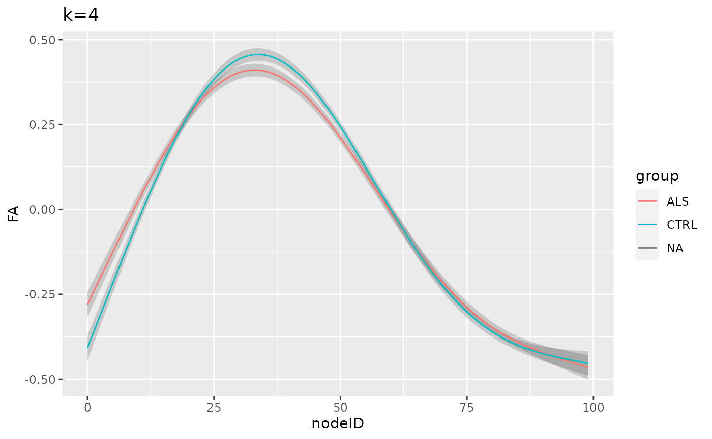
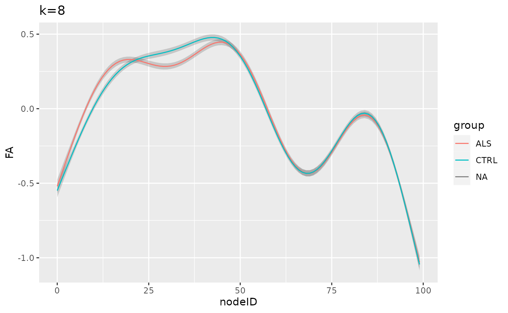
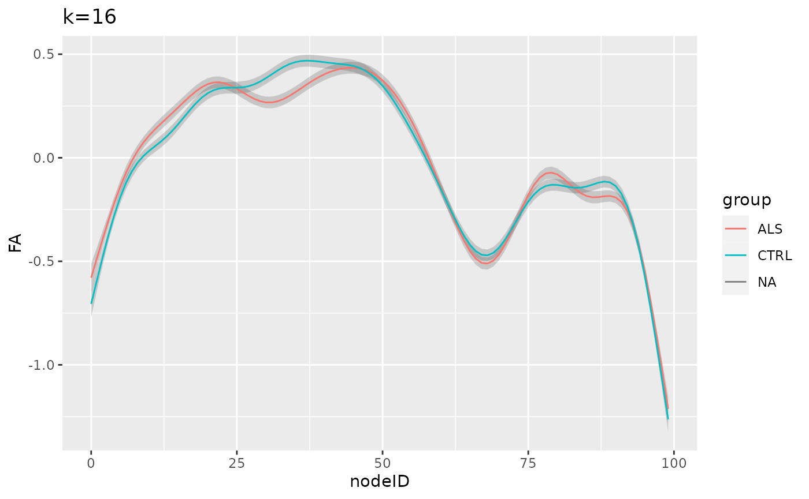
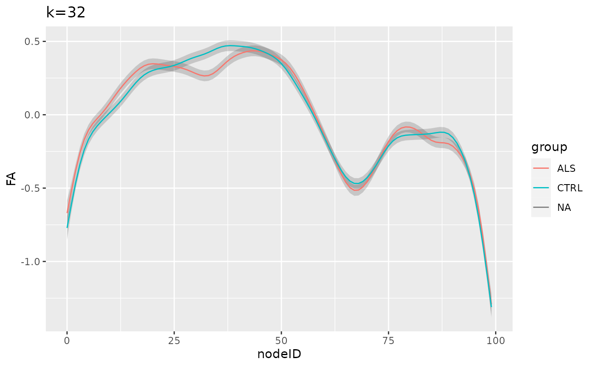

This vignette demonstrates how a GAM model changes with increased flexibility. The data we will use here contains tract profiles from diffusion MRI measurements in a group of patients with Amyotrophic Lateral Sclerosis (ALS) and a group of matched controls (Sarica et al. 2017).
We start by loading the tractable library and
gratia, as well as ggplot2, which we will use
to interpret the fitted model.
Next, we will use a function that is included in
tractable to read this dataset directly into memory.
Importantly, both the group (“ALS” or “CTRL”) and the subject identifier
(“subjectID”) need to be factors for subsequent analysis to work
properly.
sarica <- tractable::read.afq.sarica()
sarica$group <- factor(sarica$class)
sarica$subjectID <- unclass(factor(sarica$subjectID))We fit models with different levels of flexibility, encoded in
different values of k:
k_values = c(4, 8, 16, 32)
models = list()
for (ii in seq_along(k_values)){
models[[ii]] <- tractable_single_bundle(df_afq = sarica,
tract = "Right Corticospinal",
participant_id = "subjectID",
group_by = "group",
covariates = c("age", "group"),
dwi_metric = "fa",
k = k_values[ii])
}And we plot the smooths, divided by group for each one of these levels:
plots =list()
for (ii in seq_along(k_values)){
sm <- smooth_estimates(models[[ii]]) %>%
gratia::add_confint()
plots[[ii]] <- sm %>%
ggplot() +
geom_ribbon(aes(group=group, ymin = lower_ci, ymax = upper_ci, x = nodeID),
alpha = 0.2) +
geom_line(aes(group=group, color=group, x = nodeID, y = est))+
labs(y = "FA", title = sprintf("k=%d", k_values[ii]))
}
plots
#> [[1]]
#> Warning in max(ids, na.rm = TRUE): no non-missing arguments to max; returning
#> -Inf
#> Warning: Removed 48 rows containing missing values (`geom_line()`).
#>
#> [[2]]
#> Warning in max(ids, na.rm = TRUE): no non-missing arguments to max; returning
#> -Inf
#> Warning in max(ids, na.rm = TRUE): Removed 48 rows containing missing
#> values (`geom_line()`).
#>
#> [[3]]
#> Warning in max(ids, na.rm = TRUE): no non-missing arguments to max; returning
#> -Inf
#> Warning in max(ids, na.rm = TRUE): Removed 48 rows containing missing
#> values (`geom_line()`).
#>
#> [[4]]
#> Warning in max(ids, na.rm = TRUE): no non-missing arguments to max; returning
#> -Inf
#> Warning in max(ids, na.rm = TRUE): Removed 48 rows containing missing
#> values (`geom_line()`).